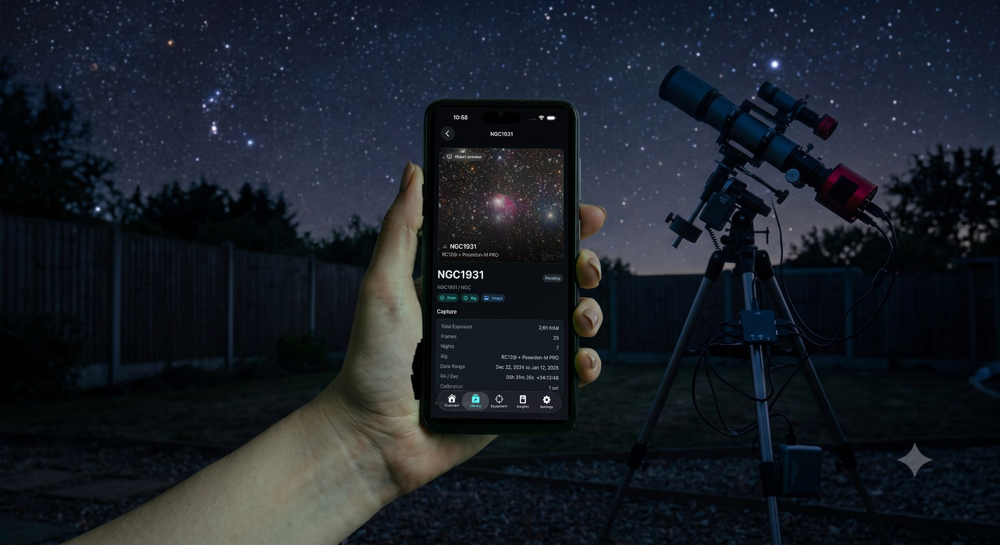

AstroIndexer Companion · iPhone · iPad · Android · Apple TV
Your library, in your pocket
The desktop app indexes and analyses your archive. The companion app puts the result in your hand — every object, every capture stat, every pipeline status, from the field or from the couch. On Apple TV it puts your processed images on the largest screen you own.
Free with your AstroIndexer library · phone, tablet and Apple TV